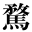
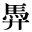
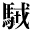
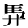

| 1_94_13.gif |
●石橋忍月『舞姫』 ●夏目漱石『吾輩は猫である』（新字・新仮名） ●森鴎外『舞姫』 |
| 2_92_81.gif |
●夏目漱石『満韓ところどころ』 |
|
| 2_92_82.gif |
●内藤湖南『支那歴史的思想の起源』 |
|
|  | 2_92_92.gif |
●泉鏡花『義血侠血』 |
| 2_92_94.gif |
●夏目漱石『満韓ところどころ』 |
| 0212_7291.gif |
●内藤湖南『爾雅の新研究』 |
|
|  | 0212_7294.gif |
●内藤湖南『爾雅の新研究』 |
| 0212_7319.gif |
●内田魯庵（三文字屋金平）『為文学者経』 |
|
| 0212_7326.gif |
●内藤湖南『爾雅の新研究』 |
|
| gaiji001.gif |
●南方熊楠『十二支考（２）兎に関する民俗と伝説』 |
|
| gaiji002.gif |
●南方熊楠『十二支考（２）兎に関する民俗と伝説』 |
|
|  | gaiji003.gif |
●内藤湖南『爾雅の新研究』 |
|  | gaiji004.gif |
●内藤湖南『爾雅の新研究』 |